01 · Fuera de cuadro
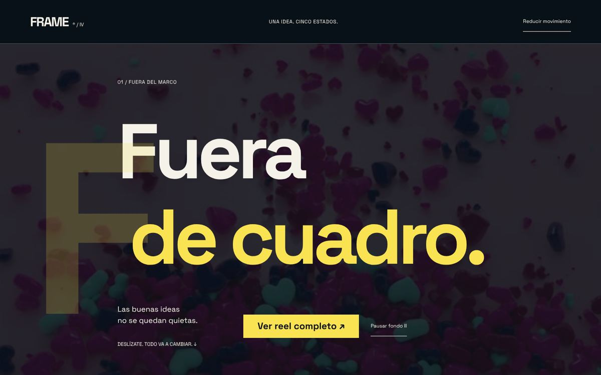
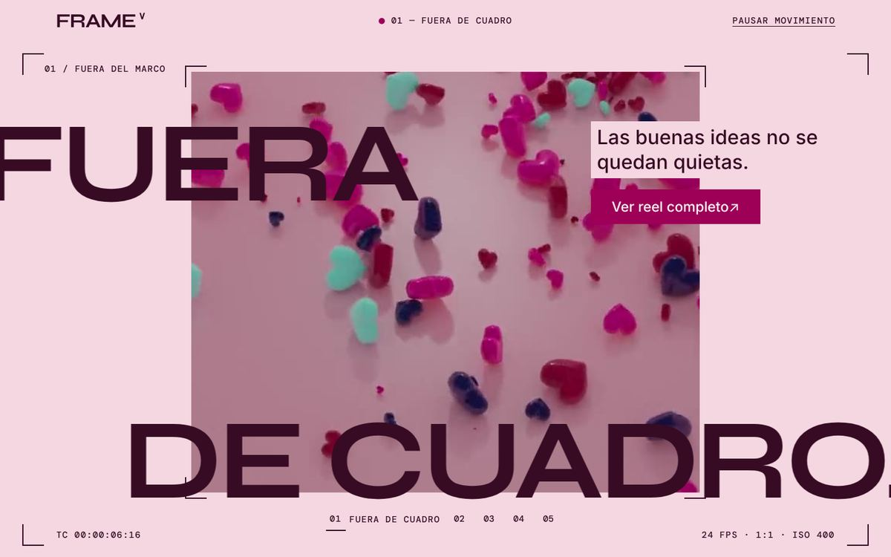
Agencia FRAME · mismo encargo, mismo texto, mismos vídeos · 12 oct 2026
FRAME IV es la exploración que hizo otra IA para la agencia. FRAME V es la misma pieza rehecha por Claude sobre SYX y su sistema de retícula. Las dos se midieron en el mismo Chromium, con el mismo script, en las mismas posiciones de scroll y con los mismos umbrales.
El README de FRAME IV reconoce que no tuvo navegador para comprobar el resultado. Aquí sí lo hubo, y la medición encontró texto invisible y escenas que se pisan. También encontró fallos en FRAME V, que se corrigieron antes de entregarlo.
Contraste medido en los píxeles que pinta el navegador, texto a texto, en 41 posiciones de scroll por configuración. Cuenta lo que se ve en pantalla, transiciones incluidas, no lo que dice la hoja de estilos.
| Prueba | FRAME IV | FRAME V | Lectura |
|---|---|---|---|
| Contraste · escritorio 1440×900 | 77 fallos · 21 textos | 0 · 1.042 muestras | V gana |
| Contraste · portátil 1280×720 | 73 fallos · 21 textos | 0 · 995 muestras | V gana |
| Contraste · móvil 390×844 | 60 fallos · 9 textos | 0 · 697 muestras | V gana |
| Contraste · movimiento reducido | 48 fallos · 7 textos | 0 · 1.156 muestras | V gana |
| Contraste · sistema en oscuro | 78 fallos · 22 textos | 0 · 1.042 muestras | V gana IV no cambia con el modo |
| Textos que se pisan (incluye texto decorativo pintado) | 30 | 0 | V gana |
| axe-core WCAG 2.2 AA · escritorio / móvil | 0 / 4 nodos | 0 / 0 | V gana |
| CLS · LCP (Chromium sin red lenta) | 1,11 · 3.496 ms | 0,008 · 332 ms | V gana |
| Teclado: foco visible y en pantalla | 13 de 13 | 20 de 20 | Empate V tiene más controles |
| Objetivo táctil ≥ 24 px (WCAG 2.5.8) | todos | todos | Empate V: 3 controles bajo 44 px |
syx-scan de la app | 0 hallazgos* | 0 hallazgos | Empate |
Contraste del tema SYX (check-contraste) | 436 · 0 fallos* | 436 · 0 fallos | Empate |
| CSS de SYX enviado | 188 KB | 125 KB | V gana solo los 5 componentes usados |
| Script durante un recorrido completo | 113 ms | 248 ms | IV gana el lienzo de la señal cuesta |
| Nodos del DOM | 157 | 243 | IV gana |
* Cifras declaradas en el README de FRAME IV; su snapshot de SYX no venía en el material.
Capturas reales a 1440×900 en el mismo punto de cada recorrido. Los vídeos aparecen como póster: el Chromium de pruebas no reproduce H.264.


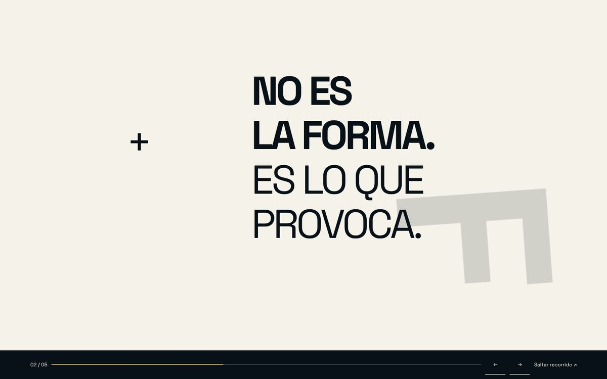
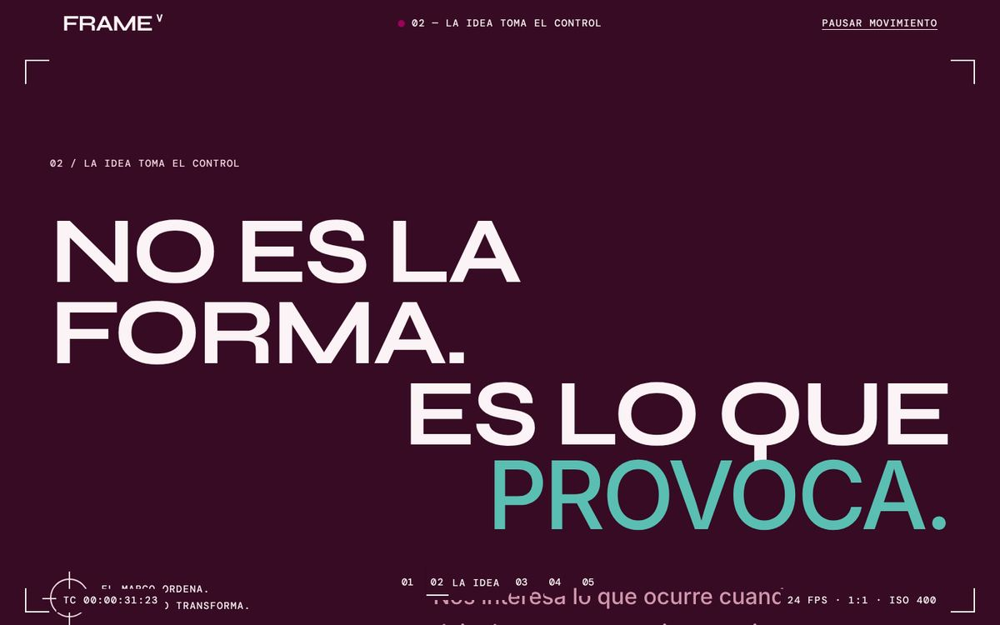
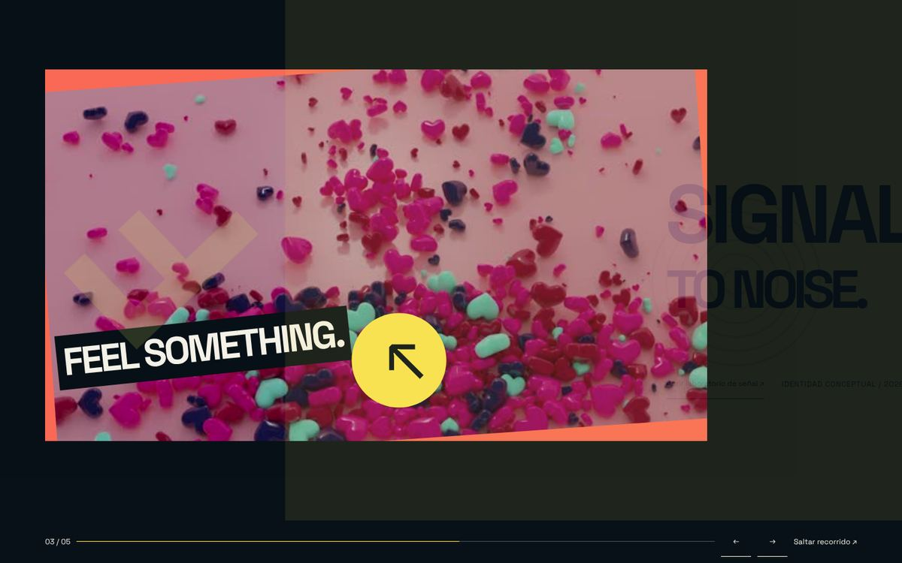
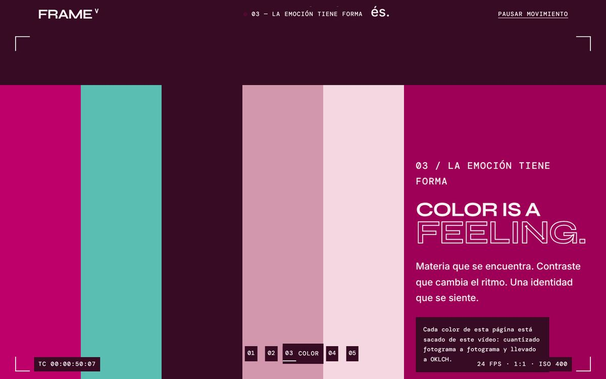
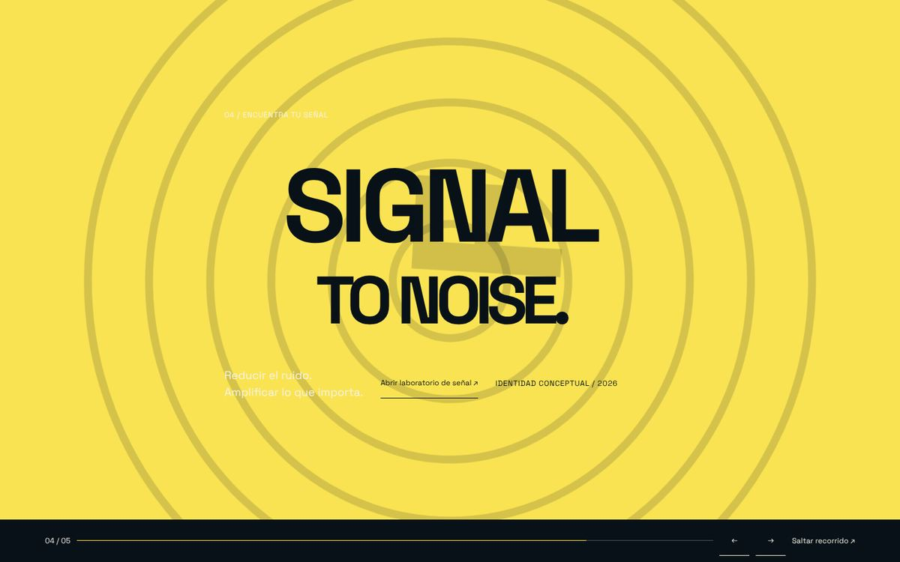
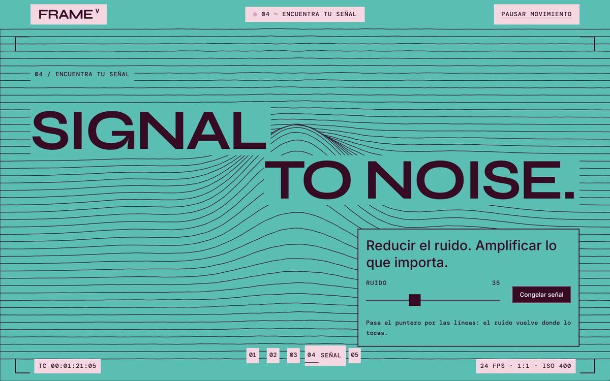
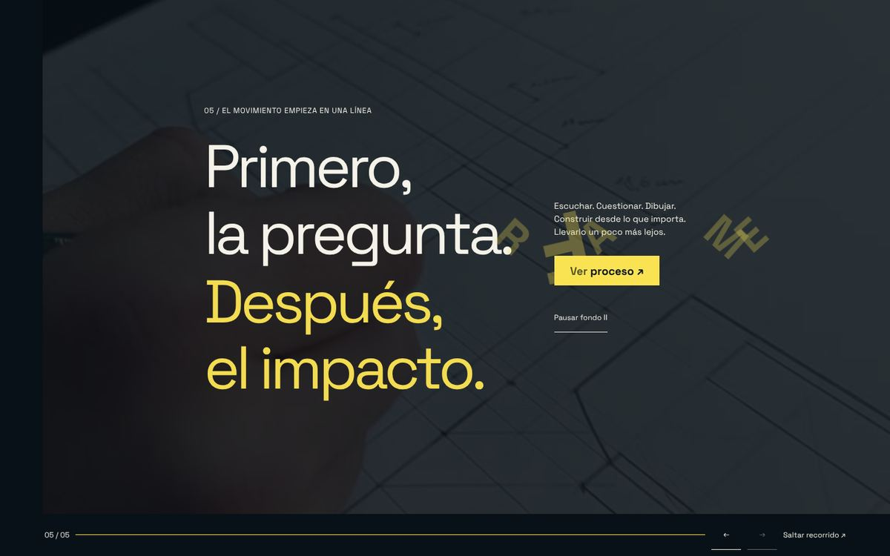
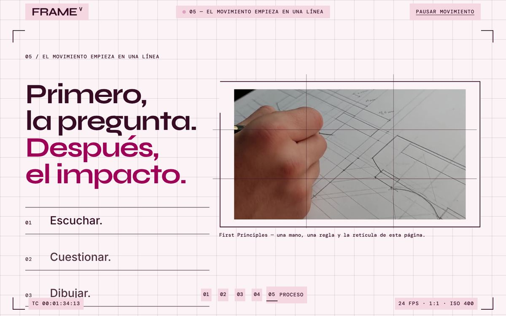
FRAME IV
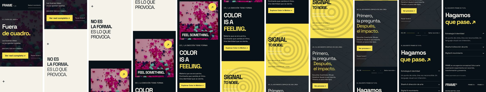
FRAME V
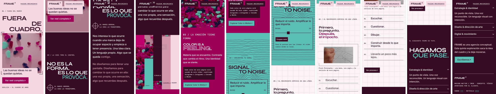
gridcalc.py a partir de las fuentes reales y del texto real de la página.mol-dialog para el reel en lugar de un visor propio, tokens --frame5-* que solo leen semánticos y una línea syx-reuse en cada bloque propio.Playwright 1.56 con Chromium. Cinco configuraciones: 1440×900, 1280×720, 390×844 táctil, movimiento reducido y sistema en oscuro. En cada una, 41 posiciones de scroll repartidas por toda la página.
Contraste: para cada texto visible que llega al lector, se recortan sus píxeles de la captura, se separan en dos grupos (texto y fondo) y se calcula la razón WCAG entre ellos. Umbral 4,5:1, o 3:1 en texto grande. Se descartan los textos cortados por el borde de la ventana.
Textos que se pisan: cajas de texto de bloques distintos, decorativos incluidos, que se solapan más de un 15 %. axe-core 4 con las etiquetas WCAG 2.2 AA y buenas prácticas. CLS y LCP con PerformanceObserver; coste de scroll con las métricas de rendimiento de Chrome.